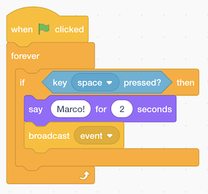

Clase 0
- Bienvenida
- ¿Qué son las Ciencias de la Computación?
- Representación de números
- Text
- Imágenes, video, sonidos
- Algoritmos
- Pseudocódigo
- Scratch
Bienvenida
- Este año, las clases de CS50 serán en Loeb Drama Center en la Universidad de Harvard dónde, gracias a la colaboración del American Repertory Theater, tenemos un escenario impresionante e incluso algunas utilidades para realizar demostraciones.
- Adaptamos como fondo del escenario una pintura en acuarela del campus de Harvard del siglo 18, que fue creada por el estudiante de Harvard, Jonathan Fisher.
- Hace veinte años aún como estudiante, el profesor David J. Mallan superó su propio miedo, salió de su zona de comfort y se inscribió en la clase de CS50 de aquella época, dándose cuenta de que el curso era menos sobre programación y más sobresolucionar problemas.
- De hecho, dos terceras partes de los estudiantes de CS50 nunca han tomado un curso de Ciencias de la Computación anteriormente.
- Y algo que es muy importante:
Lo que realmente importa en este curso no es tanto cómo se compara tu conocimiento con el de tus compañeros sino qué tanto has avanzarás en tu conocimiento comparado a cuándo comenzaste el curso
- Comenzaremos el curso recreando un componente del juego Super Mario, más tarde construiremos una aplicación web llamada "CS50 Finance" la cuál permitirá a los usuarios comprar y vender acciones de manera virtual, y terminaremos el curso con la creación de un proyecto final de tu elección.
¿Qué son las Ciencias de la Computación?
- Las Ciencias de la Computación tratan fundamentalmente sobre solución problemas.
- Pensamos en solución problemas como el proceso de tomar datos de entrada
(detalles sobre el problema) y generar una salida (la solución al problema). La “caja negra” en el medio
son las Ciencias de la Computación, o el código que aprenderemos a escribir.

- Para comenzar a hacer eso, necesitamos una forma de representar las entradas y salidas, para que podamos trabajar y almacenar información de una manera estandarizada.
Representando números
- Podríamos comenzar con la tarea de pasar asistencia, contando el número de gente en un salón de clases. Si contamos con nuestra mano, levantando un dedo a la vez para representar a cada persona, no seremos capaces de contar hasta un número muy alto. Esta forma de conteo se conoce como sistema unario, dónde cada dígito representa un el valor uno.
- Seguramente conoces un sistema más eficiente para representar números, en el cuál tenemos 10 dígitos, del 0 al 9:
0 1 2 3 4 5 6 7 8 9
- Este sistema se llama decimal, o base 10, debido a que hay 10 diferentes valores que un dígito puede representar.
- Las computadoras usan un sistema más simple llamado binario, o base dos, con solo dos dígitos posibles, 0 y 1.
- Cada dígo binario también se conoce como bit.
- Debido a que las computadoras funcionan con electricidad, la cuál puede ser encendida o apagada, resulta muy conveniente
representar un bit con los estados encendido o apagado de un switch para representar 0 o 1.
- Por ejemplo, podríamos encender un foco para contar 1.
- Si tenemos tres focos, podemos encenderlos en diferentes combinaciones, y contar desde 0 (con los tres focos apagados)
hasta 7 (con los tres focos encendidos):

- Dentro de las computadoras modernas, ya no hay focos sino millones de pequeños switches llamados transistores los cuales de igual manera se pueden encender y apagar para formar diferentes valores.
- Por ejemplo, sabemos que el siguiente número representa ciento veintitrés en sistema decimal.
1 2 3
- El
3está en la columa de las unidades, el2está en la columna de las decenas, y el1en la columna de las centanas. - Así qué
123es100×1 + 10×2 + 1×3 = 100 + 20 + 3 = 123. - Cada posición de un dígito representa una potencia de 10, debido a que hay 10 dígitos posibles
para cada posición. La posición más a la derecha es 100, la del medio 101, y la de
más a la izquierda 102:
102 101 100 1 2 3
- El
- En binario, debido a que tenemos solo dos dígitos, tenemos potencias de 2 para cada posición:
22 21 20 # # #
- Esto es equivalente a:
4 2 1 # # #
- Esto es equivalente a:
- Con todos los focos o switches apagados, aún tendremos el valor de 0:
4 2 1 0 0 0
- Si cambiamos el valor binario a, digamos,
0 1 1, el valor decimal sería 3, debido a que sumamos el 2 y el 1:4 2 1 0 1 1
- Con más focos o interruptores, podríamos tener un valor de
110010, el cuál tendría el valor decimal equivalente de50:32 16 8 4 2 1 1 1 0 0 1 0
- Debido a que
32 + 16 + 2 = 50.
- Debido a que
- Con más bits, podemos contar valores más altos.
Texto
- Para representar letras, solo necestiaríamos definir una manera de relacionar números con letras. Ciertas personas, hace muchos años, definieron en conjunto y de forma estándar esta relación . La letra “A”, por ejemplo, es el número 65, y “B” es 66, y así en adelante. Diferentes programas de computadora usan el contexto (por ejemplo si estamos mirando una hoja de cálculo o un email) para interpretar y mostrar los mismos bits como números o como texto.
- La relación estándar, conocida como ASCII, también incluye letras minúsculas y signos de puntuación.
- Si recibimos un mensaje de texto con un patrón de bits que contienen los valores decimales
72,73, y33, esos bits representarían letrasHI!. Cada letra típicamente se representa con un patrón de ocho bits, o un byte, así que las secuencias de bits que recibimos son01001000,01001001, y00100001.- Probablemente ya estemos familiarizados con usar bytes como unidad de medida de información, como los megabytes o gigabytes, cuando hablamos de millones o miles de millones de bytes.
- Con ocho bits, o un byte, tenemos 28, o 256 valores diferentes (incluyendo el cero). (El valor más alto al que podemos contar es 255.)
- Otros caracteres, como letras, tilde o símbolos de otros lenguajes, son
parte de un estándar llamado Unicode,
el cual usa más bits que el ASCII para lograr representar todos los caracteres.
- Cuándo recibimos un emoji, nuestra computadora en realidad está recibiendo un número binario
que se relaciona con una imagen de un emjoi basado en el estándar Unicode.
- Por ejemplo, el emoji “cara con lágrimas de alegría” es simplemente el patrón de bits
000000011111011000000010:

- Por ejemplo, el emoji “cara con lágrimas de alegría” es simplemente el patrón de bits
- Cuándo recibimos un emoji, nuestra computadora en realidad está recibiendo un número binario
que se relaciona con una imagen de un emjoi basado en el estándar Unicode.
Imágenes, video, sonidos
- Una imagen, como la correspondiente a un emoji, está compuesta de colores.
- Con solo ocho bits, podemos relacionar números también a colores. Hay mucho sistemas para representar colores, uno muy común es el RGB, el cuál representa diferentes colores indicando la cantidad de rojo, verde y azul de cada color.
- Por ejemplo, el patrón de bits que usamos antes,
72,73, y33puede indicar la cantidad de rojo, verde y azul en un color. (Y un programa de archivos de imagenes sabría que esos bits estarían relacionados a un color, a diferencia de un programa de mensajes de texto que los relacionaria a letras.)- Cada número podría ser un byte, con 256 valores posibles, así que con tres bytes, podríamos
representar colores. Nuestros tres bytes de arriba representaría un color amarillo oscuro:

- Cada número podría ser un byte, con 256 valores posibles, así que con tres bytes, podríamos
representar colores. Nuestros tres bytes de arriba representaría un color amarillo oscuro:
- Los puntos, o cuadros, en nuestras pantallas se llaman pixeles, y las imágenes están
compuestas de miles o millones de esos pixeles. Así que al usar tres bytes para representar un color
para cada pixel, podemos crear imágenes. Podríamos ver los pixeles de un emoji si ampliamos la imagen (zoom), por ejemplo:
- La resolución de una imagen es el números de pixeles que hay, horizontal y verticalmente, así que una imagen de alta resolution tendrá más pixeles y requerirá más bytes para ser almacenada.
- Los videos están hechos de muchas imágenes cambiando muchas veces en un segundo, para darnos la apariencia de movimiento, como en un antiguo cuaderno de animación (flipbook).
- La música también se puede representar con bits, relacionando números a notas y duraciones, o con relaciones más complejas de bits a frecuencias de sonido en un determinado instante.
- Los formatos de archivos, como JPEG y PNG, o documentos de Word o Excel, también están basados en un estándar para representar también información con bits que fue definido por alguien.
Algoritmos
- Ahora que podemos representar información para la entrada y la salida, podemos hablar de solución de problemas. La caja
negra de antes contiene algoritmos, los cuales son instrucciones paso a paso para resolver problemas:

- Un humano también puede interpretar algoritmos, por ejemplo, recetas de cocina. Cuándo programamos una computadora, necesitamos ser más precisos y evitar instrucciones ambiguas o que puedan mal interpretarse
- Probablemente tenemos una app en nuestros teléfonos para almacenar contactos, con sus nombres y ordenados alfabéticamente. El equivalente antiguo a esto es un directorio telefónico, una copia impresa de una lista de números y teléfonos.
- Nuestra entrada al problema de encontrar el número de teléfono de alguien sería el directorio telefónico y el nombre que estamos buscando. Podríamos abrir el directorio y comenzar a buscar desde la primera página, una página a la vez. Este algoritmo sería correcto, debido a que eventualmente encontraríamos lo que buscamos si es que está en el directorio.
- Podríamos avanzar dos páginas a la vez, pero este algoritmo no sería correcto, debido a que podríamos saltar la página con el nombre que buscamos. Podríamos arreglar este error (conocido como bug) regresando páginas si es que hemos avanzado de más, debido a que sabemos que el directorio telefónico está ordenado alfabéticamente
- Otro algoritmo sería abrir el directorio telefónico a la mitad, determinar si el nombre que buscamos está en la mitad de la izquierda o en la de la derecha (debido al orden alfabético), y reducir el tamaño de nuestro problema a la mitad. Podemos repetir esto hasta que encontremos el nombre buscado, reduciendo el tamaño del problema cada vez a la mitad. Iniciando con un directorio de 1024 páginas, necesitaríamos solo 10 pasos de dividir nuestro problema a la mitad antes de quedarnos solo on una página pendiente por revisar. Podemos visualizar esto en la siguiente animación de la división de un directorio telefónico a la mitad, de manera repetida, comparado a la animación de buscar una página a la vez.
- De hecho, podemos representar la eficiencia de cada uno de esos algoritmos en una gráfica:
- Nuestra primera solución, buscar una página a la vez, se representa con una línea roja: el tiempo para resolver el problema incrementa de manera lineal con el tamaño del problema. n es un número que representa el tamaño del problema, así con n páginas en nuestro directorio telefónico, tenemos que realizar hasta n pasos para encontrar un nombre.
- La segunda solución, buscar dos páginas a la vez, se representa con una línea amarilla: la pendientes es menos pronunciada, pero aún muestra una relación lineal. Ahora necesitamos solo n / 2 pasos, debido a que avanzamos dos páginas a la vez.
- Nuestra solución final, dividir el directorio telefónic a la mitad cada vez, se representa con una líne verde, con una relación fundamentalmente diferente entre el tamaño del problem y el tiempo para resolverlo: una relación logarítmica, debido a que el tiempo para resolver se incrementa más lentamente según se incrementa el tamaño de nuestro problema. En otras palabras, si aumentamos el tamaño del directorio de 1000 a 2000 páginas, necesitaríamos solo un paso más para encontrar un nombre. Si el tamaño nuevamente aumenta al doble de 2000 a 4000 páginas, aún necesitaríamos solo un paso más. La ínea verde está etiquetada con log2 n, o logaritmo base 2 de n, debido a que dividimos el problema a la mitad en cada paso.
- Generalmente cuando escribimos programas usando algoritmos, no solo nos importa que sean correctos, también nos importa que tan bien diseñados estén, considerando factores como la eficiencia.
Pseudocódigo
- Podemos escribir pseudocódigo, el cuál es una representación
precisa en algún lenguaje humano como Inglés o Español:
1 Pick up phone book 2 Open to middle of phone book 3 Look at page 4 If person is on page 5 Call person 6 Else if person is earlier in book 7 Open to middle of left half of book 8 Go back to line 3 9 Else if person is later in book 10 Open to middle of right half of book 11 Go back to line 3 12 Else 13 Quit
1 Toma un directorio telefónico 2 Abre el directorio telefónico a la mitad 3 Lee la página 4 Si la persona está en la página 5 Llama a la persona 6 Si "de otra forma" la persona está en una página anterior 7 Abre el directorio a la mitad de la mitad de la izquierda 8 Regresa a la línea 3 9 Si "de otra forma" la persona está en una página posterior 10 Abre el directorio a la mitad de la mitad de la derecha 11 Regresa a la línea 3 12 "De otra forma" 13 Terminar
- Con estos pasos, revisamos la página de la mitad, decidimos qué hacer, y repetimos. Si la persona no está en la página, y no hay más páginas por revisar, entonces terminamos. Es particularmente importante recordar el caso final. Cuándo otros programas en nuestras computadoras olvidan casos como el del final, es cuándo pueden aparecer comportamientos como "congelarse" o "la aplicación no responde", debido a que el programa encuentra un caso que no fue tomado en cuenta por quién lo creo, o continúa repitiendo las mismas instrucciones una y otra vez sin lograr ningún progreso.
- Algunas de estás líenas comienzas con verbos, o acciones, las cuales llamaremos
funciones:
1 Pick up phone book 2 Open to middle of phone book 3 Look at page 4 If person is on page 5 Call person 6 Else if person is earlier in book 7 Open to middle of left half of book 8 Go back to line 3 9 Else if person is later in book 10 Open to middle of right half of book 11 Go back to line 3 12 Else 13 Quit
- También tenemos ramas que conducen a diferentes caminos, como bifurcaciones en un camino, a estas
las llamaremos condiciones:
1 Pick up phone book 2 Open to middle of phone book 3 Look at page 4 If person is on page 5 Call person 6 Else if person is earlier in book 7 Open to middle of left half of book 8 Go back to line 3 9 Else if person is later in book 10 Open to middle of right half of book 11 Go back to line 3 12 Else 13 Quit
- Y a las preguntas qué deciden a dónde iremos las llamaremos expressions Booleanas, las cuales
dan como resultado un valor de sí o no, o verdadero o falso:
1 Pick up phone book 2 Open to middle of phone book 3 Look at page 4 If person is on page 5 Call person 6 Else if person is earlier in book 7 Open to middle of left half of book 8 Go back to line 3 9 Else if person is later in book 10 Open to middle of right half of book 11 Go back to line 3 12 Else 13 Quit
- Por último, tenemos palabras que crean ciclos, en dónde podemos repetir parrtes de nuestro programa, estos se llaman
ciclos:
1 Pick up phone book 2 Open to middle of phone book 3 Look at page 4 If person is on page 5 Call person 6 Else if person is earlier in book 7 Open to middle of left half of book 8 Go back to line 3 9 Else if person is later in book 10 Open to middle of right half of book 11 Go back to line 3 12 Else 13 Quit
Scratch
- Podemos escribir programas con los elementos que acabamos de identificar:
- funciones
- condiciones
- expresiones Booleanas
- ciclos (loops)
- Y más adelante identificaremos otros elementos como:
- variables
- hilos (threads)
- eventos
- …
- Antes de que comencemos a aprender a usar un lenguaje de programación llamado C, usaremos un lenguaje gráfico de programación llamado Scratch, en el cuál podemos arrastrar y soltar bloques que representan instrucciones.
- Un programa simple en C que muestra el texto “hello, world” en la pantalla, se ve de esta manera:
#include <stdio.h> int main(void) { printf("hello, world\n"); }- Tiene muchos símbolos y una estructura muy particular (sintáxis) de estos símbolos que tendremos que aprender.
- El ambiente de programación de Scratch es más amigable:

- Arriba a la derecha, tenemos un "escenario" que mostrará nuestro programa, en dónde podemos cambiar el fondo, agregar personajes (llamados sprites en Scratch), y más.
- Arriba a la izquierda, tenemos piezas de rompecabezas que representan funciones, variables, u otros conceptos, podemos arrastrar y solotar estas piezas en el área de instrucciones del centro.
- Abajo a la derecha, podemos agregar más personajes para usar en nuestro programa.
- Podemos arrastrar algunos bloques para hacer que Scratch diga hola, mundo”:

- El bloque “cuándo se presiona la bandera verde” se refiere al inicio de nuestro programa (hay una bandera verde arriba del escenario que podemos usar para iniciar el programa), y debajo colocamos un bloque decir” y en él escribmos “hola, mundo”. Explorando la interfaz y experimentando podemos descubrir que hacen cada uno de estos bloques.
- También podemos arrastrar el bloque “preguntar y esperar”, con una pregunta como “¿Cómo te llamas?”,
y combinarlo con un bloque “decir”:

- El bloque “respuesta” es una variable, o valor, el cuál almacena lo que el usuario del programa escribe, y podemos arrastrarla dentro de un bloque “decir”.
- Pero no pausamos después de decir "Hola" con el primer bloque, así que podemos usar el bloque “unir”
para combinar dos frases y que así nuestro gato pueda decir “hola, David”:
- Cuando intentamos anidar bloques o colocarlos uno dentro de otro, Scratch nos ayuda expandiendo los lugares en los que se pueden usar.
- De hecho, el bloque “decir” es por si mismo un algoritmo, en dónde proveemos un valor de entrada
hola, mundo” y produce la salida de Scratch (el gato) “diciendo” esa frase:

- El bloque “preguntar”, también toma un valor de entrada (la pregunta que queremos hacer), y produce
salida del bloque “respuesta”:

- Ahora podemos usar el bloque “respuesta” junto con nuestro texto, “hola, “, como entradas del algoritmo unir …

- … y esta salida podemos usarla como entrada del bloque “decir”:

- Abajo a la izquierda de la pantalla, veremos un icno para extensiones, y una de ellas se llama
Texto a Voz (Text to Speech). Después de agregarla, podemos usar el bloque “decir” para escuchar hablar a nuestro gato:

- La extensión Texto a Voz, convierte el texto a audio usando "la nube" (o simplemente otras computadoras en internet).
- Podemos intentar que el gato haga meow:

- Podemos hacerlo decir meow tres veces, pero ahora estaríamos repiteiendo los bloques varias veces.
- Usemos un ciclo (loop), o un bloque “repetir”:

- Ahora nuestro programa logr el mismo resultado, pero con menos bloques. Podemos considerar que tiene un mejor diseño: si hay algo que queremos cambiar, solo necesitamos cambiarlo en un solo lugar en lugar de tres
- Podemos hacer que el gato se oriente y se mueva hacia el apuntador del mouse:

- Para probar la extensión Pen, podemos usar el bloque “pen down” con una condición:
- Aquí, movemos al gato al apuntdor del mouse y si el mouse está presionado realizamos la acción “bajar el lápiz”, para poder dibujar. De otra forma, levantamos el lápiz. Repetimos esto muy rápido, una y otra vez, así logramos un efecto de dibujar cuando el botón del mouse se mantenga presionado.
- Scratch también tiene diferentes vestuarios, o imagenes, que podemos usar para nuestros personajes.
- Haremos un programa que puede contar:

- Aquí,
contadores una variable, cuyo valor podemos definir, usar y cambiar.
- Aquí,
- Veamos algunos otros programas, comobounce, en el cual se mueve de izquierda a derecha
en la pantalla repetidamente, y se voltea cuando llega al borde de la pantalla.
- Podemos mejorar la animación haciendo que el gato cambie entre diferentes diseños o vestuarios cada que da 10 paso en bounce1. Ahora cuando presionamos la bandera verde para iniciar nuestro programa, podremos ver como si el gato moviera las piernas.
- Incluso podemos grabar nuestros propies sonidos con el micrófono de la computadora, y reproducirlos en nuestro programa.
- Para construir programas más complejos podemos comenzar con funcinoes simples y agruparlas.
- También podemos hacer que Scratch haga meow si lo tocamos con el apuntador del mouse, en pet0.
- En bark, no tenemos solo uno
sino dos programas en el mismo proyecto de Scratch. Ambos programas se ejecutaran al mismo tiempo al presionar la vandera verde
Uno de ellos reproducirá un sonido de león si:
la variable
mutedtiene el valor defalse, y la otra modificará el valor de la variablemutedal valor detrueafalse, o defalseatrue, si la barra de espacio en el teclado está presionada. - Otra extensión usa el video de la webcam de la computadora, y reproduce el sonido meow si en el video ocurre más movimiento del definido en un intervalo.
- Si tenemos múltiples sprites o personajes, podemos tener diferenrtes conjuntos de bloques para cada uno de ellos:
- Para un personaje, tenemos estos bloques que dicen “Marco!”, y luego un bloque “difundir evento”.
Este “evento” es usado por nuestros dos sprites para comunicarse entre ellos, es como enviar un mensaje
de manera oculta. Así nuestros personajes esperarán este “evento” para decir “Polo!”:

- Para un personaje, tenemos estos bloques que dicen “Marco!”, y luego un bloque “difundir evento”.
Este “evento” es usado por nuestros dos sprites para comunicarse entre ellos, es como enviar un mensaje
de manera oculta. Así nuestros personajes esperarán este “evento” para decir “Polo!”:
- Podemos usar la extensión Traducir para decir algo en otros lenguajes:
- Aquí, la salida del bloque “unir” se usa como entrada para el bloque “traducir”, y la salida de este se usa como entrada al bloque “decir”.
- Ahora que sabemos las bases, podemos pensar en el diseño, o calidad de nuestros programas.
Por ejemplo, podríamos querer que el gato haga meow tres veces con el bloque “repetir”:
- Podemos hacer uso de el concepto de abstracción, lo cuál simplifica un concepto complejo. En este caso, podemos definir nuestro bloque “meow” en Scratch, y reusarlo en otro lugar en nuestro programa, como se puede ver en meow3. La ventaja de esto es que no necesitamos saber como está construido el algoritmo meow, ni su código, para poder usarlo en nuestros programas, haciendo que sea más legible.
- Incluso podemos definir un bloque que requiera una entrada, en meow4, tenemos un bloque que hace el gato haga meow cierto número de veces. Ahora podemos reusar el bloque en nuestro programa para hacer meow cualquier número de veces, esto es similar a cuándo usamos los bloques “traducir” o “hablar”, sin en realidad saber cómo funcionan o detalles sobre su implementación.
- Veremos unos cuántos demos más, incluyendoGingerbread tales remix y Oscartime, los cuales combinan ciclos (loops), condiciones, y movimiento para crear un juego interactivo.
- Oscartime fue creado por el profesor David hace muchos años, y comenzó poco a poco, agregando personaje por personaje, y funcionalidad por funcionalidad, hasta que en conjunto formaban un programa más complejo.
- Un estudiante pasado, Andrew, creó Raining Men. Y aunque Andrew terminó por no dedicarse a las Ciencias de la Comptuación como profesión, las habilidades de solución de problemas, algoritmos, e ideas que aprenderemos en el curso son aplicables en cualquier parte.
- ¡Hasta la próxima!